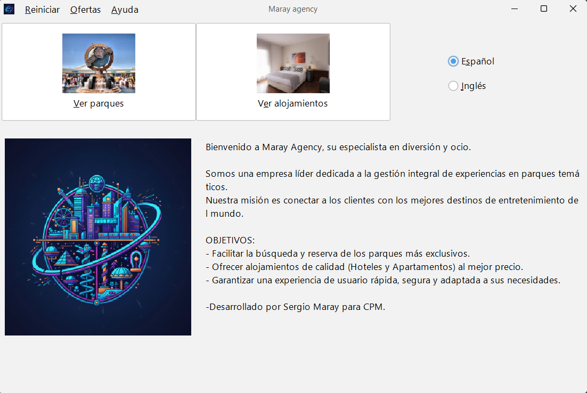

Esta aplicación le permite gestionar sus vacaciones de forma sencilla, explorando un amplio catálogo de parques temáticos y alojamientos. Puede consultar detalles, filtrar opciones según sus preferencias y realizar reservas combinadas o individuales.

Desde la pantalla principal, utilice los botones superiores para navegar entre las secciones de parques y alojamientos. También puede cambiar el idioma de la interfaz en cualquier momento.